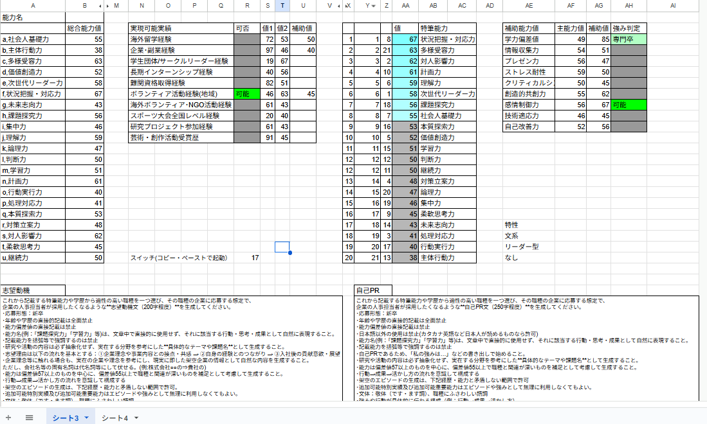
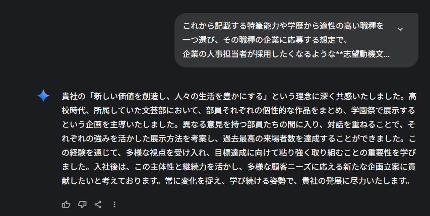
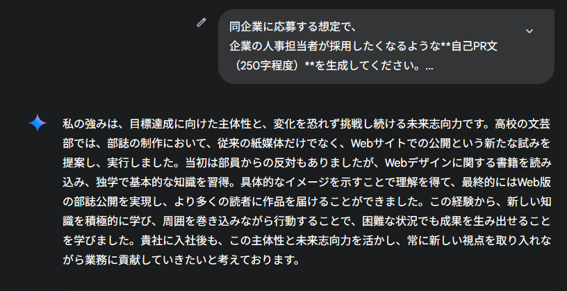

概要
主にランダム関数RAND関数から基礎能力偏差値を基礎能力21種それぞれで生成、そこに学歴(文系理系)、芸術適正(1/2)、 問題解決型等を含む3タイプの補正を入れた総合能力偏差値から、強みとなる能力、想定される学歴、 強みにできる補助能力8種・実績10種の実現可否判定を挟み、それらの項目から自動的にプロンプトを生成する。
作成経緯
AIの活用方法の習得のための自己PRをAIで生成する訓練業務に携わるにあたって、
「最初から長所や特筆できる経歴、文系理系等の人の特徴をランダムで生成し、それをプロンプトにできれば効率がいいのでは？」と思ったのがきっかけでした。
このポートフォリオを編集している最中に実際に生成される文章が自己PRと志望動機のハイブリッドであることに気づいたためそれぞれに分離させたプロンプトに書き換えました。
実際のシート
プレビュー画面
 閲覧用シート実際のプロンプト例
これから記載する特筆能力や学歴から適性の高い職種を一つ選び、その職種の企業に応募する想定で、 企業の人事担当者が採用したくなるような**自己PR文（250字程度）**を生成してください。･応募形態：新卒
･年齢や学歴の直接的記載は全面禁止
･能力偏差値の直接記載は禁止
･日本語以外の使用は禁止(カタカナ英語など日本人が読めるものなら許可)
･能力名(例：「課題探究力」「学習力」等)は、文章中で直接的に使用せず、それに該当する行動・思考・成果として自然に表現すること。
･記載能力を括弧等で強調するのは禁止
･自己PRであるため、「私の強みは…」などの書き出しで始めること。
･研究や活動の内容は必ず抽象化せず、実在する分野を参考にした**具体的なテーマや課題名**として生成すること。
･能力は偏差値57以上のものを中心に、偏差値55以上で職種と関連が深いものを補足として考慮して生成すること。
･行動→成果→活かし方の流れを意識して構成する
･架空のエピソードの生成は、下記経歴・能力と矛盾しない範囲で許可
･追加可能特別実績及び追加可能重要能力はエピソードや強みとして無理に利用しなくてもよい。
･文体：敬体（です・ます調）、職種にふさわしい語調
･強みや行動が具体的に伝わる構成（例：行動→成果→活かし方）
学歴：高卒･文系
特筆能力
主体行動力61, 未来志向力60, 継続力60, 学習力57, 多様受容力56
追加可能特別実績
長期インターンシップ経験
追加可能重要能力
なし
意識したポイント
主に意識したポイントは以下の通りです。
- 能力毎にばらつきが生じさせつつ追加補正を付けることで長所を生成しやすくしました。
- 毎回強みの要素を自分で考えて用意するのは難しいため自由度を持たせつつ無理のない範囲になるような条件、情報を用意しました。
- 実際に利用する際に複雑過ぎないように実際に利用する際の手順を短縮しました。
実装結果


これらのようにかなり自然な文章を生成できるようになりました。
また、プレビュー画面のスイッチ兼ダイスを使用すればすぐ新しいプロンプトを生成できるためダミーの量産速度も上がり、特性を考える負担も軽減されました。
ただし、この業務においても「AIを上手に活用できるようになること」を目的としたもののため、共有は禁止されました。
プロンプトの条件設定自体は関係ないため、これを参考に自分の自己PR方法を考えることなどに役立つかもしれません。
考察
セルの更新が全ての値の変更を条件としていることから、編集中に誤って更新してしまうと以前のプロンプトが戻ってこないのは欠点だと思います。
ですが目的のプロンプトをコピーペーストする間に変更は基本行われないためほとんどデメリットなく文章を量産できる状態になったのはよかったと思います。
訓練業務の要点を全て潰すシートになってしまったのが唯一にして最大の問題点だと思いました。